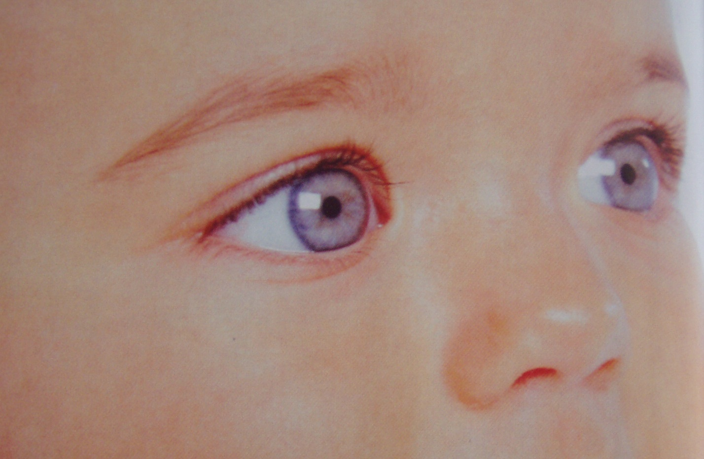

Látásjavítás természetes módszerekkel
Ezen az oldalon minden információ megtalálható a szembetegségekről, azok tüneteiről, kezeléséről, okairól, gyógyításáról
Ezen az oldalon minden információ megtalálható a szembetegségekről, azok tüneteiről, kezeléséről, okairól, gyógyításáról

Hasznos információk egészség, gyógyulás, táplálkozás, böjt, látásjavítás témakörben

Ebben a fotógalériában a virágaimról, illetve a természetben készített fotóimat tekintheted meg.